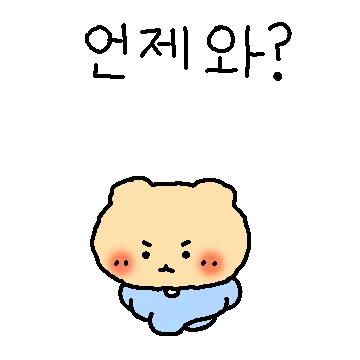
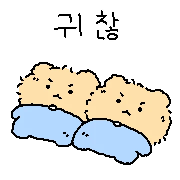

28/10 – 1/11
四日食藥表
1am 至 8am 訓覺時間唔使食。食完撳格仔剔低。

Bactigen
眼藥，左右眼
每日 4 次
Antihist 4mg
鼻水，1 粒
每日 3 次，隔 6 小時
Cipro 250mg
抗生素，1 粒
每日 2 次，隔 8 小時，食 4 日
Anapar
止痛，1–2 粒
每日 3 次，隔 6 小時，唔痛可以唔食
要注意
Anapar 跟 Antihist 一齊食。唔痛嗰次可以唔食，唔剔都得，每日最多 3 次。
胃藥、鈣片、鐵或者鋅要喺食完 Cipro 2 小時後先食。如果已經食咗，要等 6 小時先食 Cipro。唔好用奶或者乳酪送 Cipro。
Antihist 會令人眼瞓。

連緊資料庫…